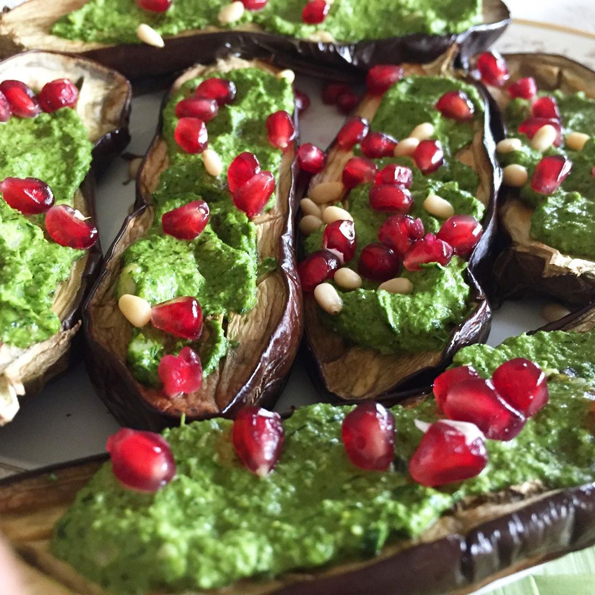
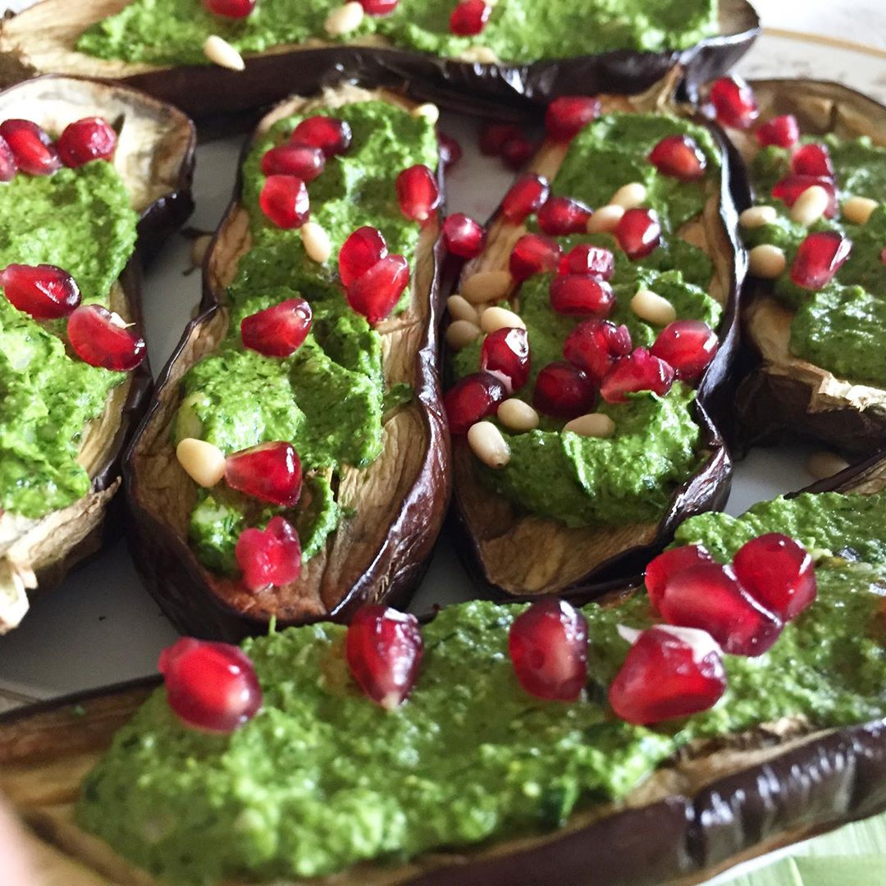
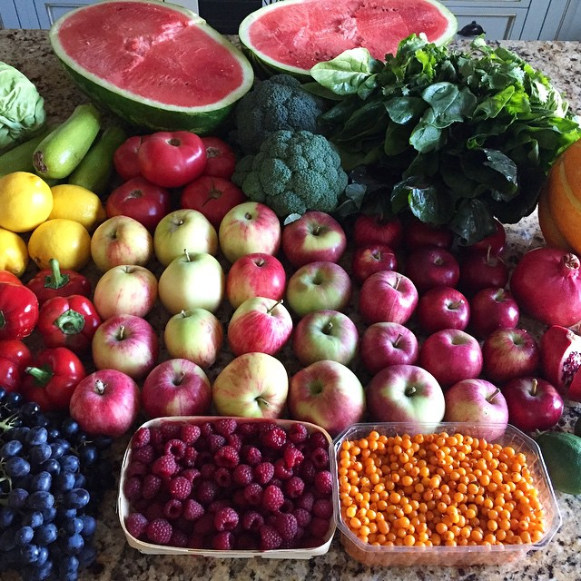
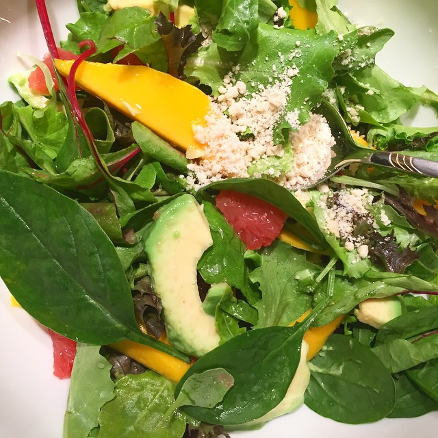
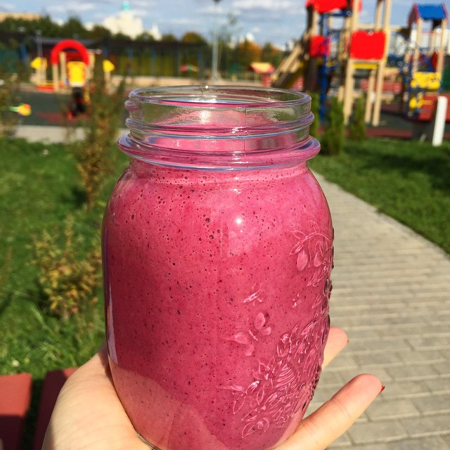

Баклажаны с соусом песто
🔸баклажаны 2 шт 🔸зелень 1 чашка 🔸кедровые орехи 1/4 стакана 🔸сок лимона 1 ст ложка, соль, специи по вкусу, зерна граната для украшения


🔸баклажаны 2 шт 🔸зелень 1 чашка 🔸кедровые орехи 1/4 стакана 🔸сок лимона 1 ст ложка, соль, специи по вкусу, зерна граната для украшения

Привет 🙋😊 я спокойна, так как в хозяйстве много полезной сезонной еды🌱 ✅ многие задавали себе вопрос: вот он (она) вообще ничего не делает, ест все подряд, пьет а может и курит 😳 и выглядит прекрасно , просто великолепно!😕

авокадо + томаты + персики + зелень + острый перец + лайм ))) с манго интереснее, но так то же необычно и свежо 🌱🍅🍑🍋 персики и томаты.. А почему бы и нет 😉

Ассорти салатной зелени, авокадо, грейпфрут, манго, заправлено тертым кешью и соком грейпфрута🌱 быстро, сочно, питательно 😊😋

Невероятный солнечный и теплый день)) со мной напиток богов и богинь😉 свекла +гранат+лен+киш миш ☀️